Locus Social is a form with a feed under it. The good apps are a feed with a few controls on it.
Virlo and Sandcastles put the media first and keep every control small and quiet. Later puts the calendar first and keeps the media library one drag away. Locus does the opposite on both screens: breadcrumb, title, two-line subtitle, three helper pills, a segmented view, a credits warning, a boxed filter form with uppercase labels, a trending line, and only then the cards. At 1280 x 609 the first card is below the fold. The cards themselves carry too much chrome, the numbers are in the wrong hierarchy, and the Week screen shows paid-ad vocabulary in an organic scheduler. None of it is broken. It just does not look like a product someone would pay for, which is the bar Cole set.
Virlo's agent page shows cards 180px from the top. Locus Watch needs 600px. Breadcrumb, H1, subtitle, helper pills, segment, warning, filter form and trending line all sit above the grid. Cut it to one line of title and one row of controls.
A bordered card with SOURCE / PLATFORM / FORMAT in uppercase over full-height selects is how Locus styles a brand settings page. Research tools use compact pill menus in one row (Virlo) or a quiet left rail (Sandcastles). Same selects, no box, no labels, 30px tall.
Format tag, platform tag, bookmark, play button, duration, two caption lines, a metric row that truncates. Every competitor uses the native 9:16 frame and two or three numbers as chips. Our "1388x" next to "12k views" is also wrong on its face: a 9-follower account should never top the list. Outlier needs a baseline floor.
Five KPI tiles, an uppercase "THE NUMBERS" row, a status pill and a wall of AI prose. Virlo's viewer is the video at full height with a narrow column: handle, one big number, two small ones, one bar, the caption, three buttons at the bottom. Nothing else.
"Black Wedges - 9, Meta ad, $2,647 spent, 1.3x" is media-buyer language inside an organic scheduler. Later's tray is a thumbnail grid of media with an "unused" filter and nothing else. Our grid is empty for a week and the phone version shows two days of empty hour cells.
Two of the three apps gate the good parts behind a card
| App | State in Cole's Chrome | Seen | Blocked, and what unlocks it |
|---|---|---|---|
| Later | Growth plan, 14 days left on trial, 0 social profiles | Calendar week / month / list, media menu, inbox, analytics, post tagging, custom analytics, settings, social sets, getting-started checklist, trending hashtags, send-posts link, the 390px layout | The composer, the preview grid, best time to post, analytics with data, the inbox with messages. All need one connected Instagram or TikTok. Cole connects Lucky's Instagram in Later (the trial is being cancelled anyway, so a throwaway connection is fine). |
| Sandcastles | Account created, feed set up for golf gear, no plan | Onboarding, the Videos feed with real golf cards, filter rail, channels watchlist, collections index, the script wizard's first step, every empty state, the 390px layout | Opening a video, Analyze, Ideas, Hooks, Reports, Projects, Persona, any collection. The app shows "Try Sandcastles for $5" on every page load. Cole starts the $5 month. |
| Virlo | 7-day free trial active after onboarding, 100 credits | Everything: agent builder, agent dashboard with 2,413 golf videos, all nine sub-tabs, viewer with transcript, filters, sort, outlier feed, trends, tags, tracking, library, copilot, automations, account, the 390px layout | Nothing. Copilot refused to write a script twice (it wants the transcript in context first). The trial converts to $49 a month on Oct 27 unless cancelled. |
Virlo: the research agent, and the best cards of the three
Navigation. Dark app, left rail with two groups (Home: Copilot, Library, Dashboard; Research: Agents, Outlier, Trends, Ideas, Admin) plus a "Quick access" list of your agents. A trial banner across the top, a credits counter top right. Every page has one title row with the page name on the left and actions on the right, then content. No breadcrumbs, no subtitles longer than one clause.
Onboarding. Seven steps with a progress bar. Describe what you sell in one line, it extracts ten search terms as chips you can edit, a filter-out list, then builds a "research agent". While it collects, you pick an avatar. Then five "how it works" cards (read your brief, search every platform, keep what fits, score every keeper, do more with your finds) each with a live example from your own niche. Then "Your initial run found 9 outlier videos" with real cards and a hover tooltip explaining the score. This is the best onboarding of the three: it teaches the one number you will see everywhere before you see the feed.
The agent dashboard. A status strip (Queued, Collecting, Analysis, Ready) with live counts. Nine sub-tabs: All Content, Insights & Trends, Creators, Outlier Videos, TikTok Shop Videos, Slideshows, Stitches & Duets, Posting Times Heatmap, Trending Sounds, Hashtags. Under them: a "content by region" row of flag tiles, then the grid.
A card. 9:16 media, two pills on the media at the top (views with an eye icon, virality score in a hot-pink pill with a flame), platform flag chip at the top left, handle with avatar and date at the bottom over a dark fade, a copy-link icon. Above the card, two quiet ghost buttons: Track and Tag. That is all. Four columns at 1280. Hover plays nothing; a click opens the viewer.
Outlier logic. Virality Score 0 to 100, in bands: 35+ Exceptional, 25 to 35 Very strong, 18 to 25 Strong, 10 to 18 Promising, under 10 Emerging. Tooltip: "A creator with 18K followers gets 2.1M views. That's 117x their usual audience." Score is views against audience size, not raw views. The Creators tab sorts creators the same way (avg score, best score, overperforming videos).
Filters and sorting. One row: content type menu (All videos, Slideshows, TikTok Shop, Stitches, Duets), a Filters popover (platform segment, regions, minimum views, date range, engagement floors for likes, comments, shares, saves, on-screen format and face), a sort menu (Just added, Most viral, Most recent, Most views, Most engaged, Most comments, Emerging). On the global Outlier page the filters are five stacked pill-menus: Fresh content, All content, Filter by date, All platforms, All of Virlo or one agent.
The viewer. Full-height dark overlay. Video at phone proportions in the middle with prev and next arrows. Right column: avatar, handle, follower count, platform and age and length and country, then one big number (6.6M views) with a "2467x followers" green pill, likes and comments, a note when the platform hides a number, an Engagement / Virality bar, CAPTION. Bottom bar: Open on YouTube, Transcript (with "copy transcript, 140 words"), Tag.
Save and collect. Tag is the save: a popover to create a coloured tag, then tags live on a Tags page with a tag rail on the left and its items on the right. Track puts a creator or a video on a radar with a check schedule priced in credits (every 6 hours to monthly).
Script flow. Chat only. Copilot has "Make script" buttons on hook cards and can "turn a find into a script", but twice it declined because the video had no transcript in context. The flow is: open the video, Transcript, ask Copilot with the transcript. Automations can mail "A script to shoot" weekly. There is no script editor screen.
Insights. A Key Insight sentence, then trend cards: name, NEW chip, counts per platform, a one-line why, Views, Creators, Tactics as chips ("use POV hooks", "reference '3-putt gang'"). Posting-times heatmap with the three best hours as pills. Trending sounds table. Popular hashtags as count chips.
Copy voice. First person from the agent ("I'll run every term across TikTok, YouTube and Instagram", "Still collecting · +297 new videos since you got here"). Short. Every empty state says what will appear and has one button.
Polish. Animated count-up numbers, live counters, a glowing progress ring, sub-tab dots when a tab has new data, a floating Copilot bar on every page with a rotating placeholder ("Which formats are winning here?"). What feels cheap: the trial banner never leaves, the pink-on-black gets loud, the copilot bar covers the fourth card's bottom on every grid.
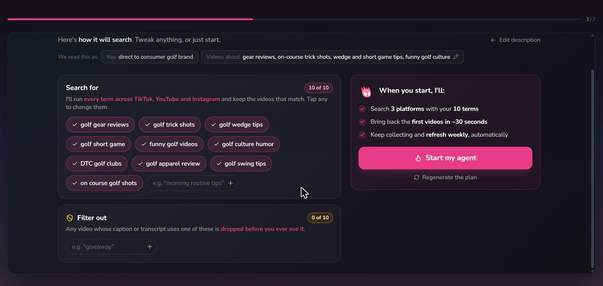
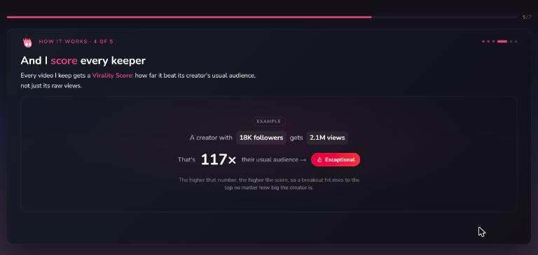
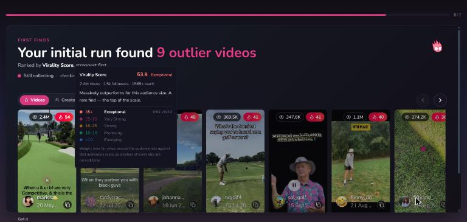
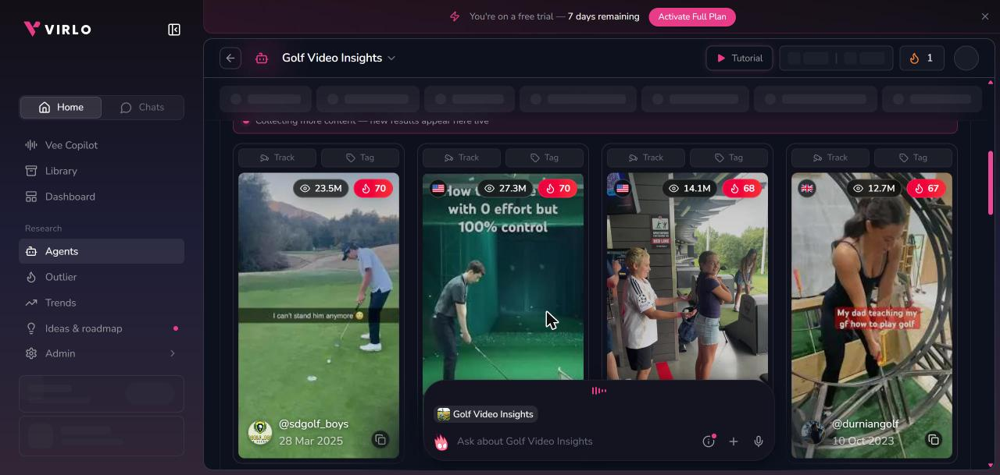
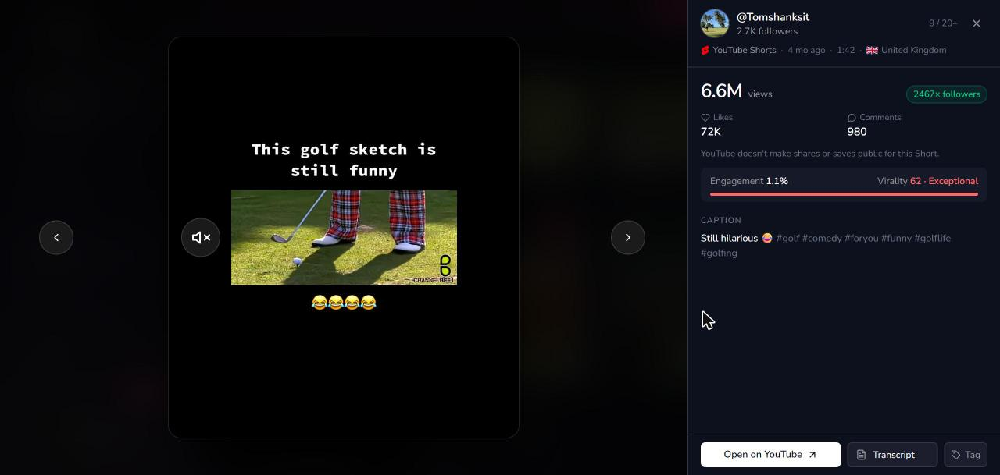
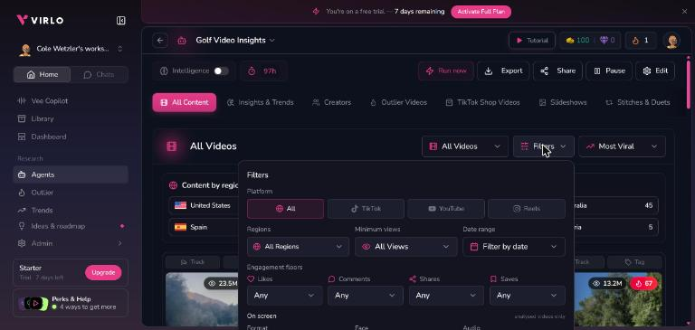
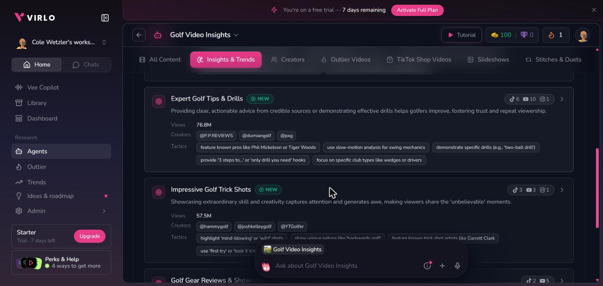
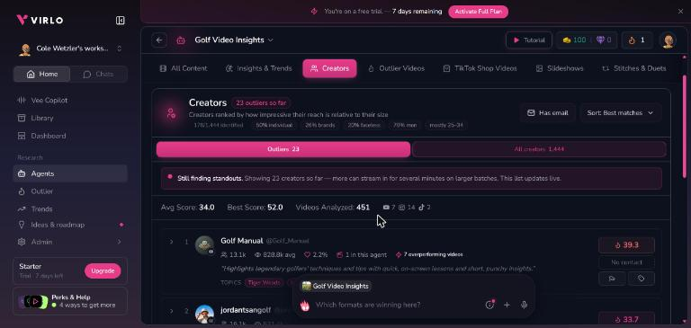
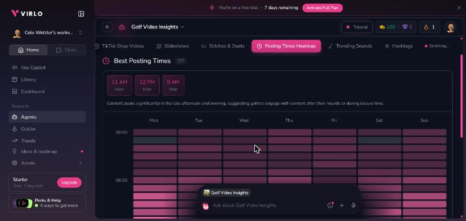
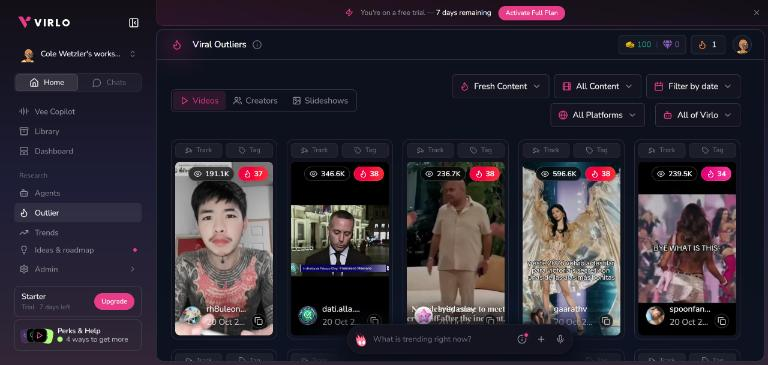
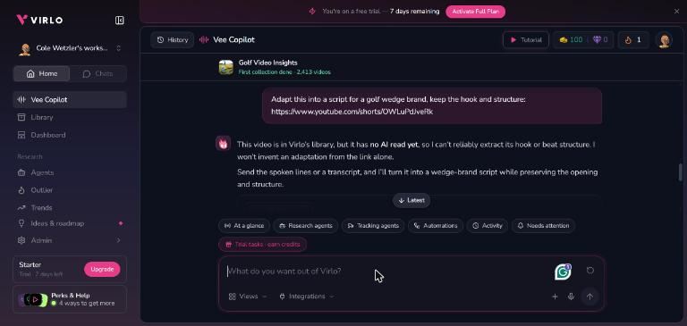
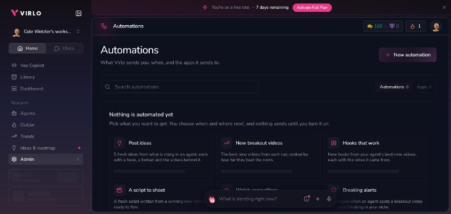
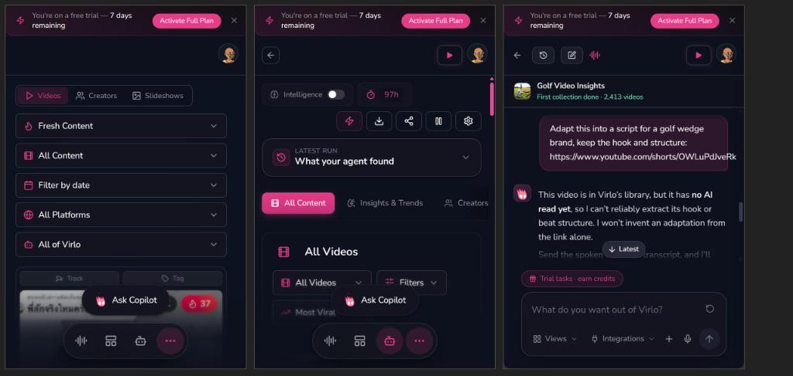
Sandcastles: the quietest feed, and the filter rail we should copy
Navigation. Light app, left rail in three groups: Research (Videos, Reports, Ideas, Hooks, Collections), Create (Scripts, Projects, Exports), Configure (Channels, Persona). A workspace switcher at the top. Every page: title, one-line subtitle, a toolbar row of icon buttons, content.
Onboarding. One modal: three cards (Explore feed, Review ideas, Create script), then "Describe your content niche", then three chip questions (how long, followers, videos a week), then "Your feed is ready" with ten channel avatars, then the $5 offer. Fast. The feed is already full when you land.
The Videos page. A fixed left rail of filters (Channels select, Keywords search, Outlier score from and to, Views from and to, Engagement from and to, Posted in last N months, Platform, Browsing mode, Save filter) and a four-column grid. Toolbar icons top right: channels, link, analyze, filter, sort, export.
A card. 9:16 cover with the platform badge top right, one line of caption, handle and age in grey, then three chips in a row: outlier ratio (0.4x, 2.1x), views with an eye, engagement with a flame. Chips are pastel, text is 12px. Nothing else on the card. Hover shows an Analyze button. Cards do not play.
Outlier logic. A plain multiplier of the channel's typical views: 0x to 100x. Shown raw, not banded. The feed default is newest first, so 0x cards from today sit at the top; sort by outlier is a toolbar icon.
Save and collect. "Collections" are curated by Sandcastles, grouped by format, visual hook and story structure (3P Crash Zoom, A vs B, Breakdowns / Explainers, Case Studies, Car Yap). Your own saves are "Save filter" and the Ideas list generated from videos you Analyze.
Script flow. New script = four steps as pills: Topic, Research, Hook, Script, with "Fix an existing script" as the alternative. The first step is a single textarea: "Describe the topic of the video you want to create". Everything past that is paid.
Analytics. The dashboard is a personal-analytics upsell with blurred demo data (84,231 followers, 1.2M views).
Copy voice. Neutral product copy. Empty states are one sentence and one button ("Use data-backed elements to write winning scripts. Write your first script"). Errors are blunt: "Error fetching hooks. Please try refreshing the page."
Polish. Very little motion. What feels premium: restraint, 14px type everywhere, a 240px rail that never moves. What feels cheap: the $5 modal on every page load, five pages that error without a plan, placeholder avatars.
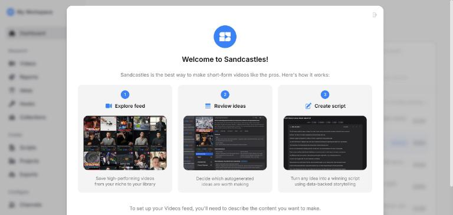
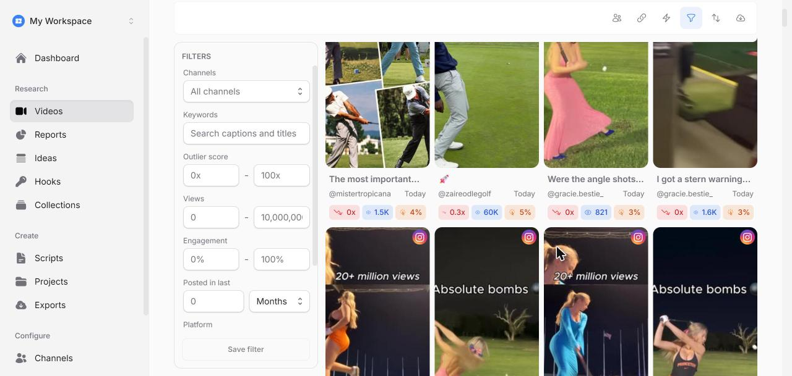
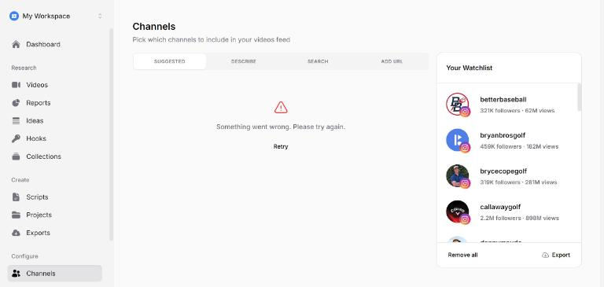
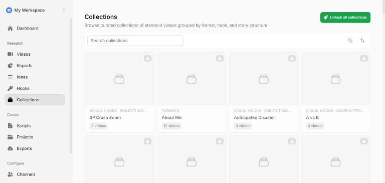
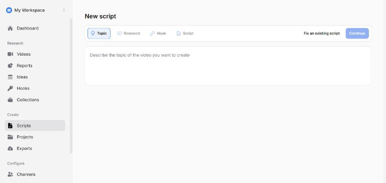
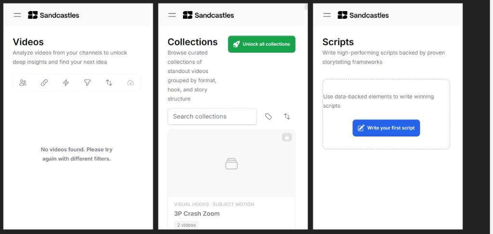
Later: the calendar is the page, everything else is a drawer
Navigation. Light app with a purple accent. Left rail: Calendar, Media, Social Inbox, Analytics, Post Tagging, Custom Analytics, then Notifications, Settings, Help, What's New, and the group switcher at the bottom. Settings is a separate full page with its own rail (Account, Social Sets & Access Groups, Users, Subscription, Devices).
Page anatomy. One top bar: Upload Media, Dropbox, a Select Profiles menu, eight platform avatars with plus badges, the trial counter. Below it two panes: the media library (about 300px) and the calendar. No page title at all.
The calendar. Week, Month and List as a three-way segment, Today and arrows, the timezone, a settings cog, Send Posts. Week is seven columns of hour rows from 7am, 24px per hour, with a thin purple "now" line. Month is a plain month grid. List has date range, Status and Sort menus and the empty state "No posts found. Try selecting different dates, statuses, or social profiles. You can also drag and drop media here to create a post."
The tray. "Drop Media Here to Upload. Then drag media to the Calendar to schedule posts." with a filter row (an "unused" chip you can clear) and a star for favourites. Media menu: Manage your media, Collect UGC (Tags, Mentions, Search by Profile, Search by Hashtag), Submitted media (Contributors).
Composer. Not reachable without a profile. Clicking an hour cell did nothing.
Content ideas. "Get Content Ideas" button and "Future trending hashtags" (a list of hashtags expected to trend in the next two weeks with one sentence each and an arrow). Both open in-place popovers.
Onboarding. A floating "Getting Started" pill bottom right with a four-step checklist and a 0% bar: Connect your social profiles, Upload your media, Schedule your first post, Elevate your strategy.
Copy voice. Friendly product copy. A "Heads up! Instagram Stories can't be sent via link just yet" toast after Send Posts. "Love using Later? Get $20 when a friend joins too" inside the rail.
Polish. Everything is 13px, grey on white, with the one purple. What feels premium: the week grid is dense and quiet, the avatars row says at a glance what is connected. What feels cheap: three different marketing nudges on one screen, no responsive layout.
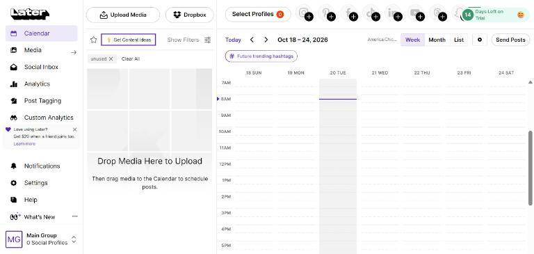
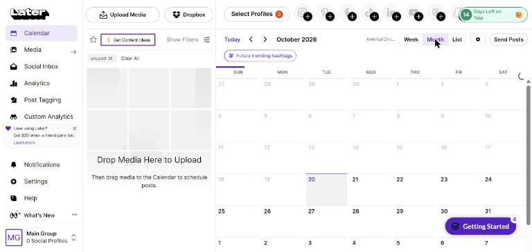
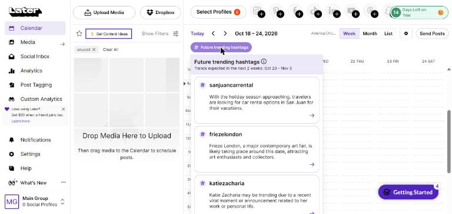
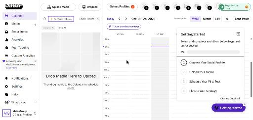
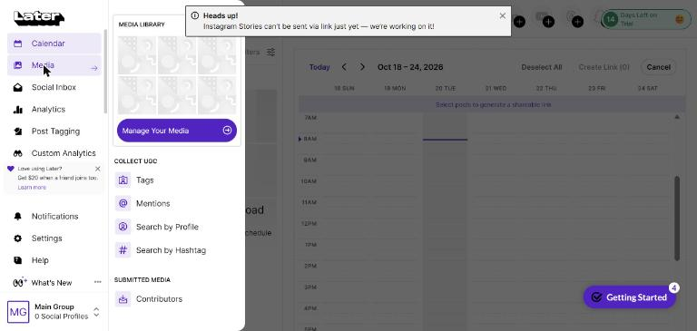
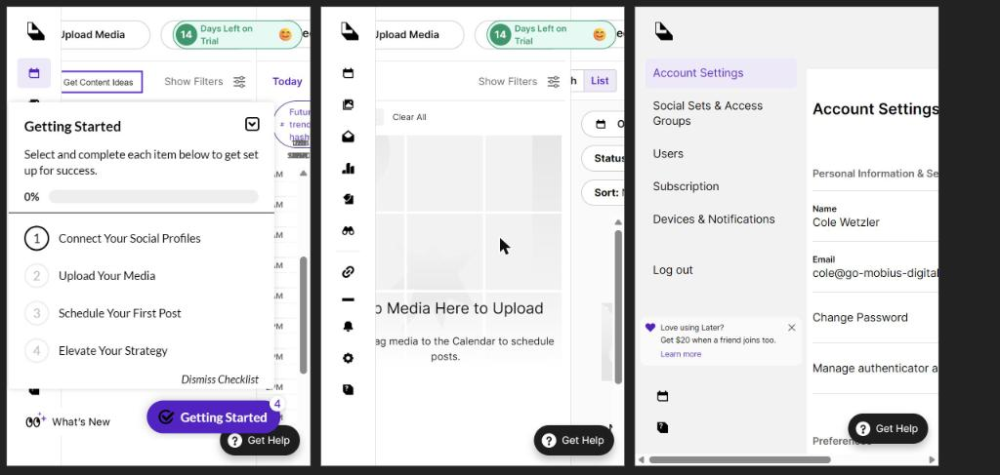
Theirs vs ours, with the problems marked
The feed
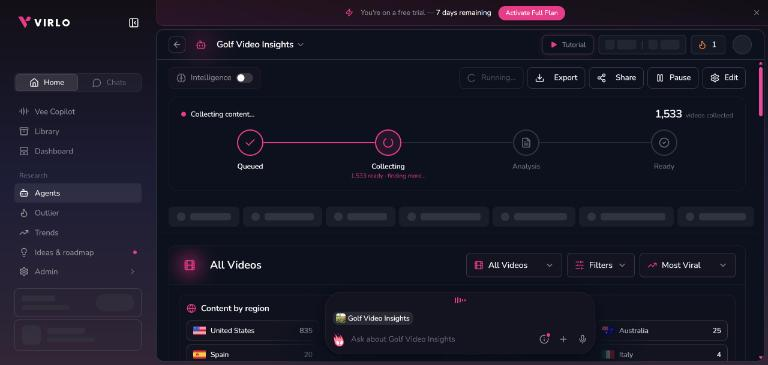
1234- 1One title row: name, Tutorial, credits. Nothing under it but the content.
- 2Section head with the one set of controls on the right, 36px tall, no labels.
- 3Sort is a word, not a form field.
- 4Status strip tells you what the system is doing right now.
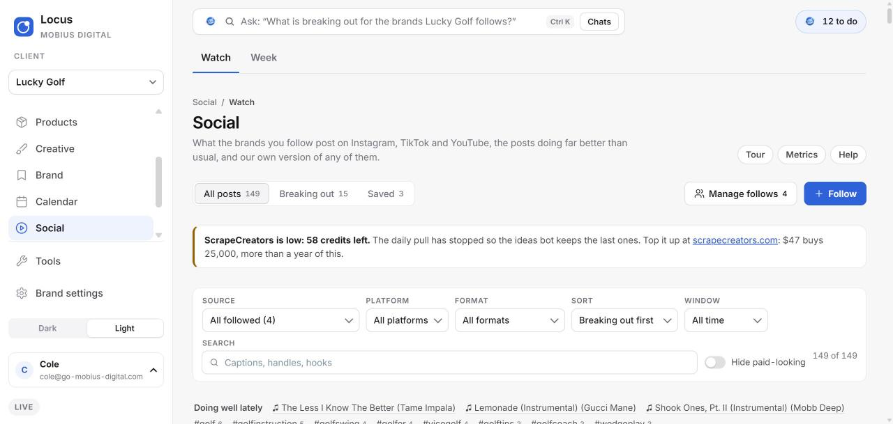
12345678- 1Breadcrumb "Social / Watch" under tabs that already say Watch.
- 2A 32px H1 "Social" plus a 2-line subtitle: 100px of nothing a returning user reads.
- 3Tour / Metrics / Help pills on every visit.
- 4Segment with counts, then two more buttons.
- 5A credits warning in the content column.
- 6Uppercase labels over 40px selects inside a bordered card.
- 7A second row: search, switch, count.
- 8"Doing well lately" as underlined text, and still no card.
The card
- 19:16, the native frame. One badge on the media.
- 2One caption line, handle and age in grey.
- 3Three chips, each with an icon. Pastel, never truncated.
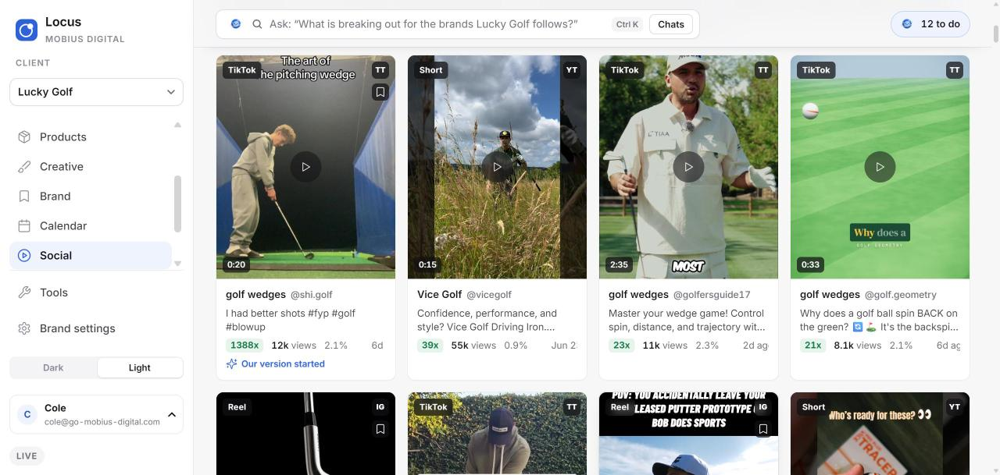
123456- 14:5 crops a vertical video; faces lose their heads.
- 2Format tag, platform tag, bookmark, play button and duration: five overlays.
- 3A 40px play circle that hides the thumbnail.
- 4Who line in bold plus two caption lines: three lines of text per card.
- 5"1388x" in green for a 12k-view post from a 9-follower account. The baseline is too small to mean anything.
- 6Ratio, views, engagement, age in one 12px line that clips at "6d ag".
One post
- 1The video at full height, arrows to the next one. The media is the page.
- 2One number that matters, with the ratio as a pill beside it.
- 3Engagement and virality share one bar.
- 4Three buttons pinned at the bottom.
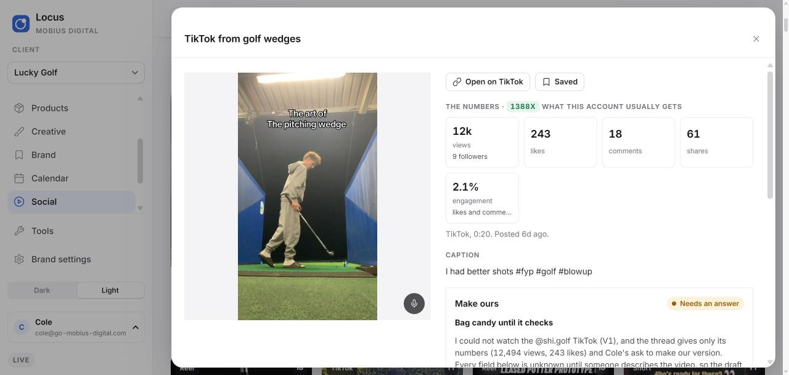
12345- 1Title "TikTok from golf wedges": the topic name reads as the account name.
- 2An uppercase caption row "THE NUMBERS · 1388X · WHAT THIS ACCOUNT USUALLY GETS" is three ideas in one line.
- 3Five KPI tiles for views, likes, comments, shares, engagement; the fifth wraps alone and clips "likes and comme…".
- 4The video is 320px wide inside a 400px column with a stray mic button.
- 5Make ours opens as a card with a status pill and a paragraph of model prose in the panel.
The scheduler
- 1The tray is a thumbnail grid with one "unused" filter. No names, no spend.
- 2Connected accounts are avatars in the top bar, one glance.
- 324px hours: a whole day fits above the fold.
- 4Week / Month / List as one segment.
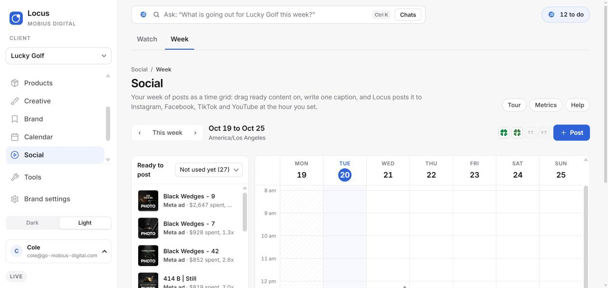
1234- 1Same six layers of chrome before the grid.
- 2"Black Wedges - 9 · Meta ad · $2,647 spent, 1.3x": paid-media words in the organic tray.
- 3Four small platform bubbles, two greyed, no names.
- 448px hours, so 8am to 12pm is all you see, and it is empty.
Why Locus Social looks weird, in the order to fix it
| Where | What is wrong | What the good apps do |
|---|---|---|
| Density | Page chrome is 600px tall at 1280 wide; 6 to 8 controls stacked before content; 14px gaps everywhere so nothing groups. | Title row 48px, one controls row 36px, cards. 4 columns of 9:16 at 1280. |
| Type scale | A 32px serif-weight H1 "Social" for a screen whose tab already says Social; uppercase 10.5px labels on selects, tiles and section heads; bold who-lines on every card. | One 18 to 20px page name, 13 to 14px everything else, uppercase only for a real table header. |
| Card ratio | 4:5 crops TikToks and Shorts, which are 9:16. The play circle covers the subject. | 9:16 media, no play circle (a click plays), the thumbnail is the hook. |
| Control styling | Filter selects inside a bordered card with labels: a settings form. Switch plus "Hide paid-looking" plus "149 of 149" plus Clear in a second row. | Pill menus with the current value as the label ("Most Viral", "All Platforms"). Secondary filters in one popover. |
| Hierarchy | The ratio chip, views, engagement and age have equal weight. KPI tiles give likes the same size as views. | One big number per post (views), ratio as a pill next to it, the rest small. |
| Outlier logic | Ratio with no floor: a 9-follower account at 1388x tops Breaking out. | Score banded and floored (Virlo: audience-size aware; Sandcastles: channel median). Minimum 10 posts or 1k median views before a ratio shows. |
| Empty and loading states | A credits warning in the content column; a dashed box with a long sentence. | A status strip (Collecting · 1,533 ready) and one button. Warnings in settings, not the feed. |
| Copy | Subtitle of 27 words. "Doing well lately" as underlined links. "Our version started". "What this account usually gets". | One clause under the title or none. "usually 4k" under the number. "Exceptional" as a band name. |
| Vocabulary | Tray items say Meta ad, $ spent, ROAS multiple. The topic follow "golf wedges" prints where an account name goes. | Organic words only (views, usually, posted). Topic posts show the creator's handle, and the topic as a small chip. |
| Phone | Three screens of chrome before the first card; the Week grid is two empty days of hour cells. | Bottom tab bar, stacked full-width selects, cards from the second screen; Week on a phone is a list by day. |
What Locus Social should be
One rail item, Social, still per brand and still switched on in Brand settings. Three tabs inside it: Feed, Saved, Week. Follows and connected accounts stay in Brand settings. Make ours stays inside the post viewer. No new rail items, no Hooks vault, no Ideas page, no node canvas, no copilot bar. The Ask bar at the top of Locus already is the copilot.
The jobs a user comes for
Scan the feed for the brands and topics the brand follows, breakouts first, watch the top few in place, open one for the numbers and caption.
One tap to save, with an optional tag (a colour and a word). Saved is its own tab with the same cards and a tag filter.
From any post: Make ours writes the beats (Hook, Setup, Demo, Payoff, CTA) from the transcript and the slides, in the brand's voice, and sends it to the creator link, the Work board or Studio.
The same flow with the format locked: keep the structure, swap the subject. For a carousel, the slide list with our product per slide. For a static, a Studio draft.
Drag a ready item onto a day, one caption, pick accounts, Schedule. It goes out on its own.
Queues (post the next ready item every Tuesday 9am), per-platform tweaks, first comment, repost a winner, best hours from our own posted results. Phase 3, not now.
Screen 1: Feed
object-fit: cover, no play circle. On the media: a platform mark top left (IG, TT, YT as a 20px monochrome glyph), the saved bookmark top right only when saved, the duration bottom left. Breakouts get the ratio pill bottom right on the media: 23x in warn colour, 3x in good colour, none under 1.5x. Hover (desktop) plays muted after 350ms as today; a tap on a phone opens the viewer. Under the media: handle in 13px semibold with the age in grey on the same line, one caption line at 12.5px grey, then one row: 55k views in ink, "usually 4k" in grey, "0.9%" in grey. Nothing truncates because nothing else is on the row. For a topic follow the handle shows, with the topic as a 11px chip on the right of the who line.Screen 2: One post (the viewer)
Screen 3: Saved
Screen 4: Week
Brand settings > Social
Components to reuse from the rest of Locus
| Need | Reuse | Change |
|---|---|---|
| Page tabs | The v3 shell page tabs (Watch / Week today) | Rename to Feed / Saved / Week; drop the breadcrumb and H1 block below them. |
| Pill menus | .hd-period menu from the Home header (a value-as-label pill with a bottom sheet on phones) | Use it for every filter instead of .soc-sel. One component, no uppercase labels. |
| Filters popover | The Ads tab's "Columns" popover | Same shell, holds Hide paid, min views, engagement floor. |
| Metric chip | The ROAS chip on the Ads cards (good / warn / grey) | Same chip for the ratio pill, on the media. |
| Viewer | Studio's dark full-screen image viewer (arrows, Esc) | Add the right column and the bottom bar. Replace V2UI.panel for posts. |
| Tag picker | Tasks' label picker (colour dot + word) | Reuse as the Save tag picker and the Saved tab's tag row. |
| Phone sheets | LxPhone.open bottom sheets | Viewer, composer, filters and the tray all open from the bottom. |
| Tray thumbs | Studio's library picker tiles | Same tile, with the source glyph in the corner. |
| Calendar posts | calendar.js Posts layer | Unchanged. Month view of posts lives there, so Week drops its own Month. |
| Status line | The Supply "On the way" sub-line style | For "Pulling Takomo and 3 more · last pull 2h ago". |
The phone version is the same three tabs, with everything from the bottom
- Feed. Title row (Social, the three tabs scroll if needed). One row of pills that scrolls sideways: All · Breaking out · Saved, then Filters. Everything else is inside the Filters sheet (source, platform, format, sort, window, hide paid). Two 9:16 columns with 10px gaps start 110px from the top. A tap opens the viewer as a full-screen sheet.
- Viewer. Media fills the width at the top (9:16, about 60% of the height), the column scrolls under it, the bottom bar is fixed with Make ours, Save, Open. Swipe left and right for the next card.
- Saved. The same two-column grid with the tag row scrolling sideways.
- Week. Not an hour grid. A day list: each day is a header (Tue 20, today) with its posts as 56px rows (thumb, caption start, time, platform glyphs, state dot). Empty days are one grey line "Nothing yet · Post". The tray is a Ready button that opens a bottom sheet of thumbs; tapping one opens the composer sheet with the time preset to the next free 9am.
- Composer. A bottom sheet that slides to full height, same order as desktop, footer buttons fixed.
- No chrome. No breadcrumb, no subtitle, no Metrics / Help pills, no credits strip. The phone shots today show three screens of this before a card.
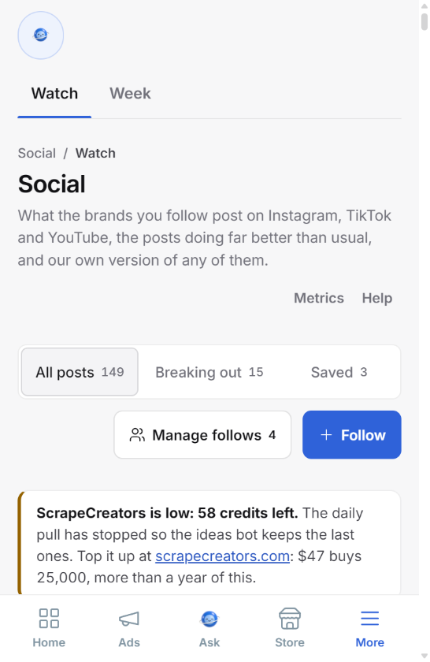
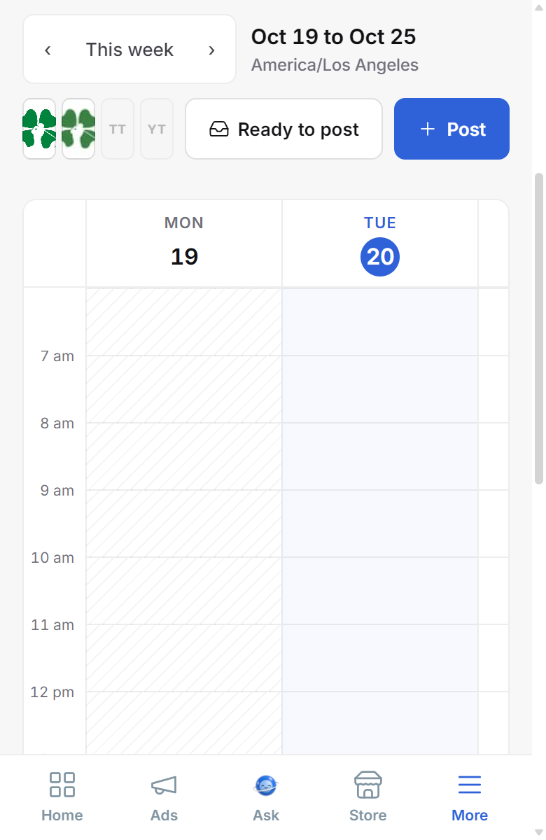
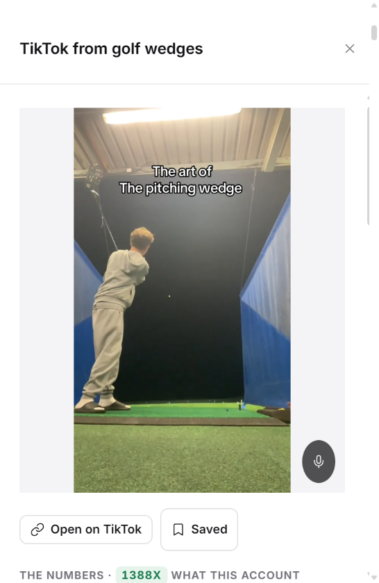
Changes in the order they pay off
What is live, and where the posts come from now
Instagram comes free through Meta. Business Discovery on the Mobius Tools token reads any business or creator account's posts, slides and video links; Takomo, Vice Golf and Bad Birdie (@badbirdiegolf) pull 50 posts each with no scraper credits. YouTube reads through the free Data API once the YT_API_KEY secret exists (Cole makes the key; Google blocked the agent). TikTok and topic searches still need ScrapeCreators, which is at 0 credits: that half is paused, not stopped.
Built from the feature inventory the same evening: Follow from a topic post, "Seen in your topics" and the Accounts roll-up in Manage follows, "N new since your last visit" + the Just added sort, a breakout line in the 5am morning card, notes on saved posts, S / M / C / T keys, Copy link / caption / transcript, the "3 of 210" counter, Week > Preview (the Instagram grid). Not built: Stories, brief-to-terms (topics are paused anyway), best-time suggestions, the LxKit header.
Sandcastles behind the $5: Analyze is a report, not a viewer
Opening a video is not a thing. The play button on a card opens the post on Instagram in a new tab. Analyze queues the video ("Queued for analysis", the result lands in the Ideas inbox a minute later). There is no in-app viewer: the feed is the only place you look at cards, which is why their cards carry everything.
Ideas = Inbox and Shortlist. One card per analyzed video (format tag, a one-line title, the same three chips as the feed). Clicking it opens a reading pane: a title, a paragraph, Your Notes, then boxes with small-caps labels: Content Positioning (Unique angle), Storytelling Format (Category chip, Why it works), Contrast Mechanism (Common belief, Contrarian reality), Hook Alignment, and "How to personalize this video for your content niche" with three options written for golf gear. Keys: S shortlist, D discard, A analysis, C turn into script. This is Virlo's take and beats in a different coat; ours is the Make ours step, which already writes beats and a hook.
Hooks = a vault. Every analyzed video adds a template line ("I just need [the target] to [the required action].") with a category chip, the ratio, views and a heart; 26 default hooks under it. We do not need a hooks screen: the hook is a line on our viewer.
Reports stays locked on Starter ("Upgrade required"). Scripts and Projects are empty states with one button. Channels is the watchlist page: Suggested / Describe / Search / Add URL, grouped suggestions with Add all, the watchlist on the right with Remove all and Export. That page is the closest thing to our Manage follows, and it is still a list with avatars, followers and views per channel, which ours should show too.
Feed sort menu: Saved recently, Newest, Oldest, Outlier score, Views, Engagement rate. Same six as ours minus Saved.
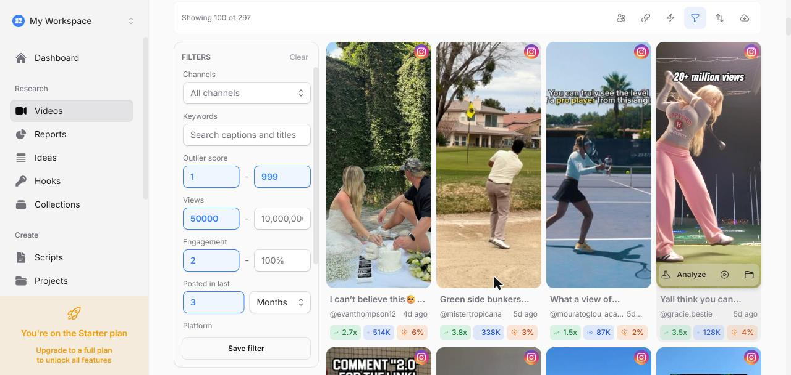
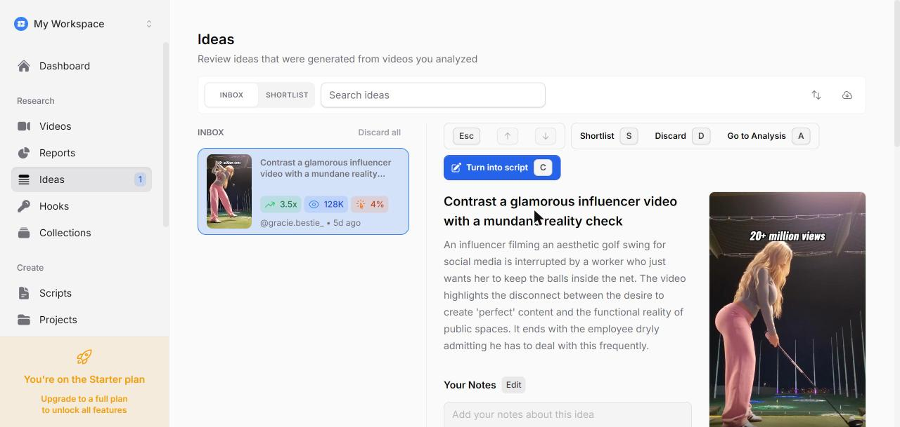
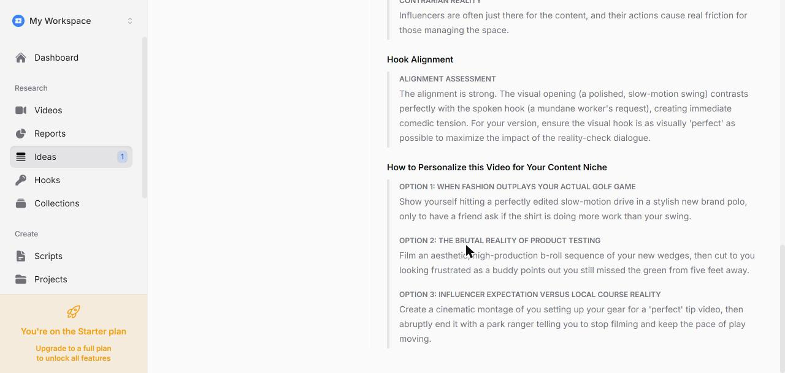
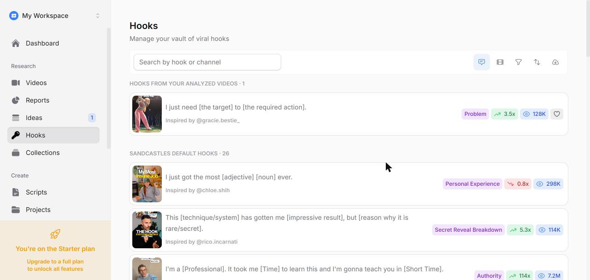
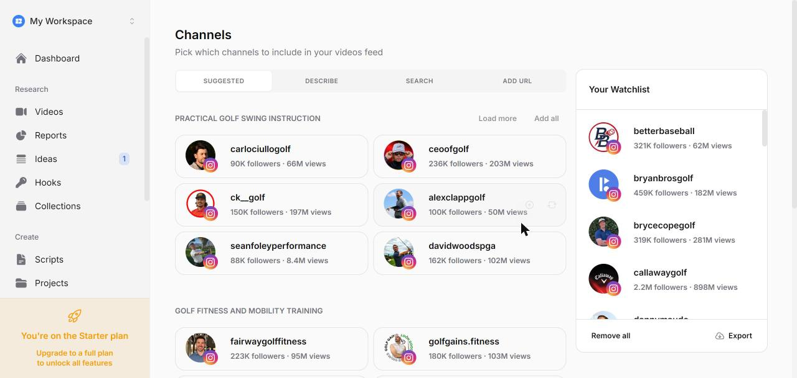
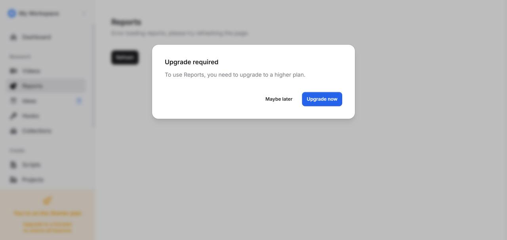
Later with a profile: the composer is one tall card, the grid is the sell
Connecting was one click on the Instagram bubble, then Instagram's own consent page (five toggles: profile and media required, comments, messages, publish, insights), then back to the calendar with the profile in the title row and a 25% checklist.
The composer (Create Post, or a calendar slot): profile picker top left, Auto Publish and the date top right, an Activity row with comments, then media on the left (a dashed drop box, "Instagram posts need at least 1 media item", Add Media) and the caption on the right with "Need help writing a caption?", Saved Captions and Hashtag Suggestions under it. More options: Add first comment, Claim your Link in Bio page, Add location, Invite collaborator; Later tools: Post tags, Campaign tags. Footer: trash, Submit for review, Schedule Post with a split arrow. Ours already matches the shape (media, caption, where, when, tweaks folded); theirs has no "where" because a post is one profile.
Preview is the Instagram grid drawn on a phone with Lucky's real posts, a Reels / Drafts toggle, and "Visual Planner Scheduling" (Quick Schedule) on the right. The week view gained two placeholder cards, "Find your best time to post" and "Create note". Analytics opens on Overview (Profile summary, Growth and discovery, "Data not ready yet" for a day) with tabs Audience, Post performance (highlights: engagement rate, engagements, views; a sortable table with Customize metrics and Export CSV), Reel, Story, Hashtag, Linkin.bio. Social Inbox lists real DMs on the left with the thread on the right.
Takeaways for ours: the grid preview is worth adding to Week once Lucky posts from Locus (a Preview tab beside Week and List); the best-time card is a placeholder until data exists, so ours can stay out until we have two weeks of posts; the inbox stays out.
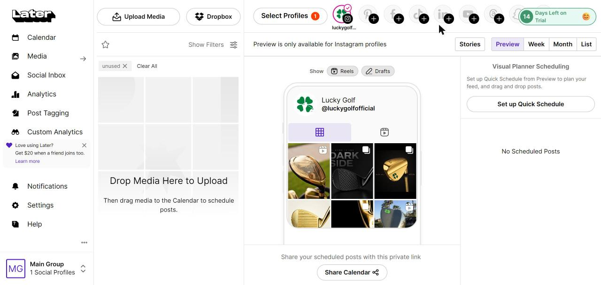
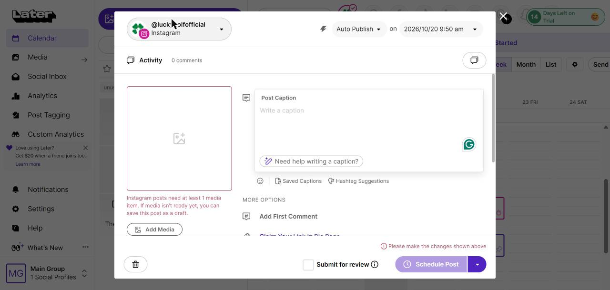
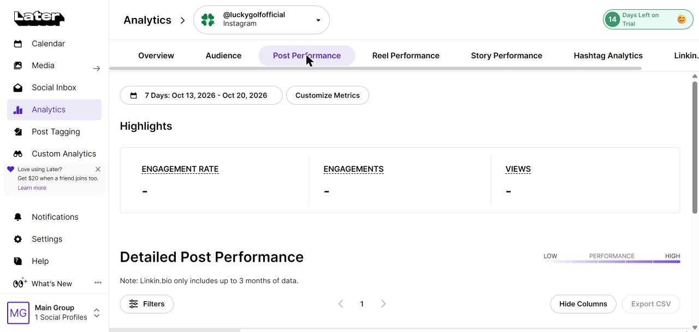
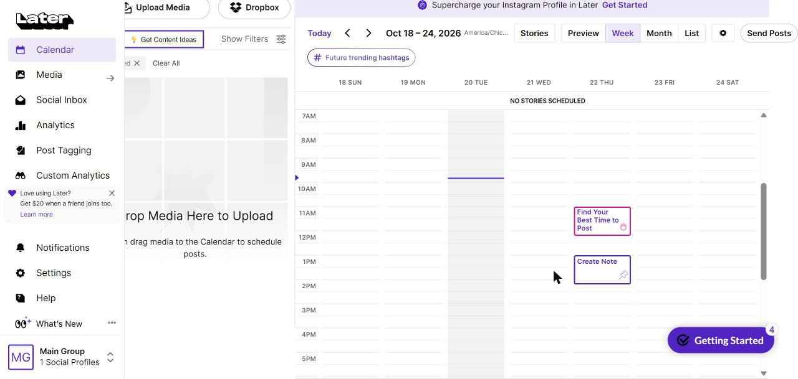
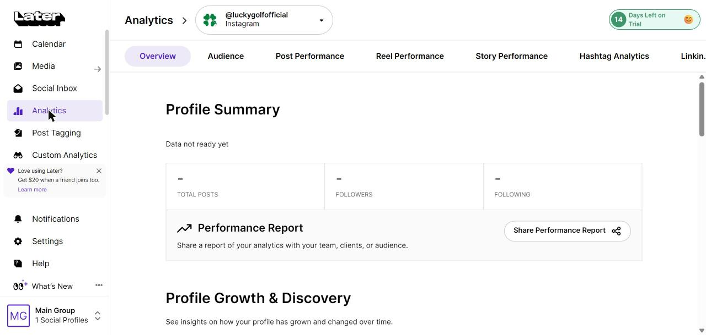
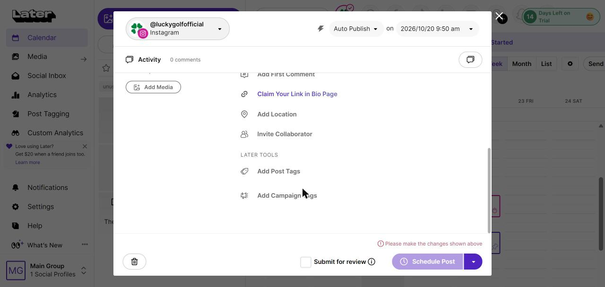